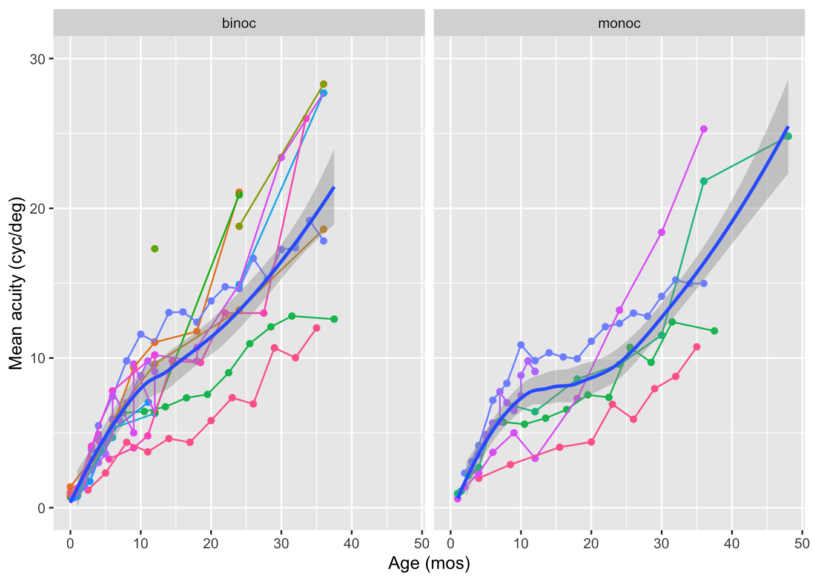

Synthesizing evidence about developmental patterns in human visual acuity as measured by Teller Acuity Cards
Authors
Rick Gilmore (rog1@psu.edu), Julia DiFulvio, Brianna Beamer, Nicole Cruz; The Pennsylvania State University
Abstract
Replication is a cornerstone of scientific rigor and a prerequisite for cumulative science. This project synthesized evidence from published research that employed a widely used measure of grating visual acuity (VA), Teller Acuity Cards (TAC). We sought to capture findings about the development of VA in early childhood into an aggregated dataset and share the dataset openly. Online literature searches identified papers that mentioned “teller acuity cards”, “visual acuity cards”, or “teller cards”. We found n=745 papers published from 1974-2024. Next, we identified empirical papers that used TAC to measure VA and which reported VA in an extractable tabular form. To-date, n=250 of 316 papers with available PDF versions have been evaluated and n=14 have been identified that present extractable data meeting our screening criteria. Available datasets represent more than n=3,991 participants and 7 countries (Australia, Brazil, Canada, China, Italy, Mexico, and the U.S.). As expected, group VA increases from birth to 36-months, with faster rates of change among children tested binocularly (0.47 cyc/deg per month) than those tested monocularly (0.35 cyc/deg per month). Group VA values at similar ages vary substantially across studies, especially in children older than 12 months. Our synthesis of published TAC VA data confirms anticipated age-related trends and points to avenues for future research, particularly regarding what factors account for cross-study and by-country differences in rates of development. We hope our soon-to-be openly shared dataset contributes toward a more cumulative science of visual development.
Status
The poster was accepted on February 6, 2025. It will be presented as follows:
Poster Session: Development: Infants, children Date/Time: Sunday, May 18, 2025, 2:45 – 6:45 pm Location: Pavilion
Visualization
The following code documents our data visualization work.
Rick Gilmore decided to take the mean of the age range reported in the (Xiang et al., 2021) data and create a new variable strictly for visualization purposes, age_grp_rog.
`geom_smooth()` using method = 'loess' and formula = 'y ~ x'
Warning: The following aesthetics were dropped during statistical transformation:
colour.
ℹ This can happen when ggplot fails to infer the correct grouping structure in
the data.
ℹ Did you forget to specify a `group` aesthetic or to convert a numerical
variable into a factor?
The following aesthetics were dropped during statistical transformation:
colour.
ℹ This can happen when ggplot fails to infer the correct grouping structure in
the data.
ℹ Did you forget to specify a `group` aesthetic or to convert a numerical
variable into a factor?

Figure 5.2: Developmental time course of mean grating acuity (in cyc/deg) for typically developing children as assessed by Teller Acuity Cards
`geom_smooth()` using method = 'loess' and formula = 'y ~ x'
Figure 5.5: Developmental time course of mean grating acuity (in cyc/deg) for typically developing children as assessed by two types of Teller Acuity Cards, TAC-I and TAC-II. loess fit added.
`geom_smooth()` using method = 'loess' and formula = 'y ~ x'
Figure 5.7: Developmental time course of mean grating acuity (in cyc/deg) for typically developing children 3 and younger as assessed by Teller Acuity Cards. Comparison between TAC-I and TAC-II cards by binocular vs. monocular testing.
Variability
We need helper functions for converting standard deviation into consistent units.
Figure 5.8: Relationship between the standard deviation (SD) of estimated visual acuity (cyc/deg) observed in typically developing children as assessed by Teller Acuity Cards.
`geom_smooth()` using method = 'loess' and formula = 'y ~ x'
Figure 5.9: Relationship between the standard deviation (SD in octaves) of estimated visual acuity (cyc/deg) observed in typically developing children as assessed by Teller Acuity Cards and the mean or median acuity in cyc/deg.
`geom_smooth()` using method = 'loess' and formula = 'y ~ x'
Figure 5.10: Relationship between the standard deviation (SD in octaves) of estimated visual acuity (cyc/deg) observed in typically developing children as assessed by Teller Acuity Cards and child age in months.
Figure 5.12: Developmental time course of mean grating acuity (in cyc/deg) for typically developing individual children as assessed by Teller Acuity Cards
Xiang, Y., Long, E., Liu, Z., Li, X., Lin, Z., Zhu, Y., … Lin, H. (2021). Study to establish visual acuity norms with teller acuity cards II for infants from southern china. Eye, 35(10), 2787–2792. https://doi.org/10.1038/s41433-020-01314-y
Source Code
---title: "VSS 2025 Submission"params: data_dir: "data/csv" update_data: TRUE use_sysenv_creds: TRUE google_data_url: "https://docs.google.com/spreadsheets/d/1UFZkbh9oU4JHpYsrkDQcNmDyqD4J-qB74dhyMzIkqKs/edit?usp=sharing" data_fn: "by-paper.csv"---## Poster titleSynthesizing evidence about developmental patterns in human visual acuity as measured by Teller Acuity Cards## AuthorsRick Gilmore (rog1@psu.edu), Julia DiFulvio, Brianna Beamer, Nicole Cruz; The Pennsylvania State University## AbstractReplication is a cornerstone of scientific rigor and a prerequisite for cumulative science. This project synthesized evidence from published research that employed a widely used measure of grating visual acuity (VA), Teller Acuity Cards (TAC). We sought to capture findings about the development of VA in early childhood into an aggregated dataset and share the dataset openly. Online literature searches identified papers that mentioned “teller acuity cards”, “visual acuity cards”, or “teller cards”. We found n=745 papers published from 1974-2024. Next, we identified empirical papers that used TAC to measure VA and which reported VA in an extractable tabular form. To-date, n=250 of 316 papers with available PDF versions have been evaluated and n=14 have been identified that present extractable data meeting our screening criteria. Available datasets represent more than n=3,991 participants and 7 countries (Australia, Brazil, Canada, China, Italy, Mexico, and the U.S.). As expected, group VA increases from birth to 36-months, with faster rates of change among children tested binocularly (0.47 cyc/deg per month) than those tested monocularly (0.35 cyc/deg per month). Group VA values at similar ages vary substantially across studies, especially in children older than 12 months. Our synthesis of published TAC VA data confirms anticipated age-related trends and points to avenues for future research, particularly regarding what factors account for cross-study and by-country differences in rates of development. We hope our soon-to-be openly shared dataset contributes toward a more cumulative science of visual development.## StatusThe poster was accepted on February 6, 2025. It will be presented as follows:*Poster Session*: Development: Infants, children \*Date/Time*: Sunday, May 18, 2025, 2:45 – 6:45 pm \*Location*: Pavilion \## VisualizationThe following code documents our data visualization work.### Setup```{r}#| label: setuplibrary(googledrive)library(ggplot2)library(readr)library(dplyr)```### ImportWe use a Google Sheet to store the by-study data:<https://docs.google.com/spreadsheets/d/1UFZkbh9oU4JHpYsrkDQcNmDyqD4J-qB74dhyMzIkqKs/edit#gid=0>The Google Sheet has multiple tabs:- The `typical_group` tab contains group data from typically developing children.- The `typical_indiv` tab contains data from typically developing individual children.- The `atypical_group` tab contains group data from atypically developing children.- The `atypical_indiv` tab contains data from atypically developing individual children.```{r}#| label: import-data# Define a helper functionimport_save_TAC <-function(sheet_name ="typical_group",csv_name ="typical_group.csv") { this_sheet <- googlesheets4::read_sheet(ss = params$google_data_url,sheet = sheet_name) out_fn <-file.path(params$data_dir, csv_name) readr::write_csv(this_sheet, out_fn)message("Data updated: ", out_fn)}# Create data filesif (!dir.exists(params$data_dir)) {message("Creating missing ", params$data_dir, ".")dir.create(params$data_dir)}if (params$update_data) {if (params$use_sysenv_creds) { google_creds <-Sys.getenv("GMAIL_SURVEY")if (google_creds !="") {options(gargle_oauth_email = google_creds) googledrive::drive_auth() } else {message("No Google account information stored in `.Renviron`.")message("Add authorized Google account name to `.Renviron` using `usethis::edit_r_environ()`." ) } } purrr::map2(c("typical_group","typical_indiv","atypical_group","atypical_indiv" ),c("typical_group.csv","typical_indiv.csv","atypical_group.csv","atypical_indiv.csv" ), import_save_TAC )# import_save_TAC()# this_sheet <- googlesheets4::read_sheet(ss = params$google_data_url,# sheet = params$sheet_name)# out_fn <- file.path(params$data_dir, params$data_fn)# readr::write_csv(this_sheet, out_fn)# message("Data updated: ", out_fn)} else {message("Using stored data.")}```### VisualizeWe'll create visualizations for each group of data separately.#### Typical Group```{r}#| label: import-typical-grouptyp_group_df <- readr::read_csv(file.path(params$data_dir, "typical_group.csv"), show_col_types =FALSE)```::: {.callout-important}Rick Gilmore decided to take the mean of the age range reported in the [@Xiang2021-ry] data and create a new variable *strictly* for visualization purposes, `age_grp_rog`.:::```{r}#| label: fig-typical-group-by-age-paper#| fig-cap: "Developmental time course of mean grating acuity (in cyc/deg) for typically developing children as assessed by Teller Acuity Cards"typ_group_df |> dplyr::mutate(author_date =paste0(author_first, "_", pub_year)) |>ggplot() +aes(x = age_grp_rog,y = central_tendency_cyc_deg,color = author_year ) +geom_point() +geom_smooth(method ="lm", se =FALSE) +facet_grid(cols =vars(binoc_monoc)) +xlab("Age (mos)") +ylab("Mean acuity (cyc/deg)") +theme(legend.position ="bottom",legend.title =element_blank()) +scale_y_continuous(limits =c(0, 30))```Let's try a version where we highlight the individual studies *and* the group trends.```{r}#| label: fig-typical-group-by-age-paper-group-trend#| fig-cap: "Developmental time course of mean grating acuity (in cyc/deg) for typically developing children as assessed by Teller Acuity Cards"typ_group_df |>#dplyr::mutate(author_date = paste0(author_first, "_", pub_year)) |>ggplot() +aes(x = age_grp_rog,y = central_tendency_cyc_deg,color = author_year ) +geom_point() +geom_line(aes(group = author_year)) +geom_smooth(aes(group =1), se =TRUE) +facet_grid(cols =vars(binoc_monoc)) +xlab("Age (mos)") +ylab("Mean acuity (cyc/deg)") +scale_y_continuous(limits =c(0, 30)) +theme(legend.position ="none")```Generate a comparable figure with the n's.```{r}#| label: fig-typical-group-by-paper-n-subslibrary(forcats)library(dplyr)typ_group_df |>filter(!is.na(n_participants)) |>group_by(binoc_monoc, author_year) |>summarize(n_subs =sum(n_participants)) |>mutate(author_year =fct_reorder(author_year, n_subs)) |>ggplot() +aes(x = author_year,y = n_subs,fill = author_year ) +geom_col() +facet_grid(cols =vars(binoc_monoc)) +coord_flip() +theme(legend.position ="none") +xlab("Source") +ylab("n observations")```Here's one with a linear fit, points and no by-study lines.```{r}#| label: fig-typical-group-by-age#| fig-cap: "Developmental time course of mean grating acuity (in cyc/deg) for typically developing children as assessed by Teller Acuity Cards"typ_group_df |> dplyr::mutate(author_date =paste0(author_first, "_", pub_year)) |>ggplot() +aes(x = age_grp_rog,y = central_tendency_cyc_deg, ) +geom_point() +geom_smooth(method ="lm", se =FALSE) +facet_grid(cols =vars(binoc_monoc)) +xlab("Age (mos)") +ylab("Mean acuity (cyc/deg)") +theme(legend.position ="bottom",legend.title =element_blank()) +scale_y_continuous(limits =c(0, 30)) +theme_classic()```Let's limit consideration to children below three.```{r}#| label: fig-typical-group-LT3y-by-card-type#| fig-cap: "Developmental time course of mean grating acuity (in cyc/deg) for typically developing children as assessed by two types of Teller Acuity Cards, TAC-I and TAC-II. *loess* fit added."typ_group_df |> dplyr::filter(age_grp_rog <=36) |>mutate(card_type =toupper(card_type)) |>ggplot() +aes(x = age_grp_rog,y = central_tendency_cyc_deg,color = card_type ) +geom_point() +geom_smooth(se =TRUE) +facet_grid(cols =vars(binoc_monoc)) +xlab("Age (mos)") +ylab("Mean acuity (cyc/deg)") +theme(legend.position ="bottom",legend.title =element_blank()) +scale_y_continuous(limits =c(0, 30)) +theme(legend.position ="bottom", legend.title =element_blank())``````{r}#| label: fig-typical-group-by-age-less-than-3y#| fig-cap: "Developmental time course of mean grating acuity (in cyc/deg) for typically developing children as assessed by Teller Acuity Cards"typ_group_df |> dplyr::mutate(author_date =paste0(author_first, "_", pub_year)) |> dplyr::filter(age_grp_rog <=36) |>ggplot() +aes(x = age_grp_rog,y = central_tendency_cyc_deg,color = binoc_monoc ) +geom_point() +geom_smooth(se =TRUE, ) +#facet_grid(cols = vars(binoc_monoc)) +xlab("Age (mos)") +ylab("Mean acuity (cyc/deg)") +theme(legend.position ="bottom",legend.title =element_blank()) +scale_y_continuous(limits =c(0, 30))```Let's look at TAC-I vs. TAC-II```{r}#| label: fig-typical-group-by-age-less-than-3y-monoc-binoc-by-card-type#| fig-cap: "Developmental time course of mean grating acuity (in cyc/deg) for typically developing children 3 and younger as assessed by Teller Acuity Cards. Comparison between TAC-I and TAC-II cards by binocular vs. monocular testing."typ_group_df |> dplyr::mutate(author_date =paste0(author_first, "_", pub_year)) |> dplyr::filter(age_grp_rog <=36) |> dplyr::mutate(card_type = stringr::str_to_upper(card_type)) |>ggplot() +aes(x = age_grp_rog,y = central_tendency_cyc_deg,color = card_type ) +geom_point() +geom_smooth(se =TRUE) +facet_grid(cols =vars(binoc_monoc)) +xlab("Age (mos)") +ylab("Mean acuity (cyc/deg)") +theme(legend.position ="bottom",legend.title =element_blank()) +scale_y_continuous(limits =c(0, 30))```#### VariabilityWe need helper functions for converting standard deviation into consistent units.```{r}sd_from_conf_bound <-function(mean, bound, n, p = .95) { ci_length <-abs(mean-bound)if (p == .95) { (ci_length/3.92)*sqrt(n) } elseif( p == .90) { (ci_length/3.29)*sqrt(n) }}sd_to_octaves <-function(mean, sd) {log2(sd/mean)}# Tolerance intervals#https://www.itl.nist.gov/div898/handbook/prc/section2/prc263.htm# https://www.itl.nist.gov/div898/handbook/prc/section2/prc263.rn =43p =0.90# proportion of populationg =0.99# confidence intervalnu = n-1zp =qnorm(p)zg =qnorm(g)a =1- ((zg**2)/(2*nu))b = zp**2- (zg**2)/nk1 = (zp + (zp**2- a*b)**.5)/ac(a,b,k1)```Many of the studies report variability in terms of octaves.```{r}#| label: fig-typical-group-sd-by-acuity#| fig-cap: "Relationship between the standard deviation (SD) of estimated visual acuity (cyc/deg) observed in typically developing children as assessed by Teller Acuity Cards."typ_group_df_sd <- typ_group_df |> dplyr::filter(sd_units %in%c("cyc_deg", "octave"),!is.na(sd)) |> dplyr::mutate(sd_oct =if_else(sd_units =="cyc_deg", log2(sd), sd))typ_group_df_sd |>ggplot() +aes(x = central_tendency_cyc_deg, y = sd) +geom_point()```Here is one with more styling.```{r}#| label: fig-typical-group-sd-by-threshold#| fig-cap: "Relationship between the standard deviation (SD in octaves) of estimated visual acuity (cyc/deg) observed in typically developing children as assessed by Teller Acuity Cards and the mean or median acuity in cyc/deg."typ_group_df_sd |>mutate(card_type =toupper(card_type)) |>ggplot() +aes(x = central_tendency_cyc_deg, y = sd, color = card_type) +geom_point() +geom_smooth() +facet_grid(cols =vars(binoc_monoc)) +xlab("Acuity (cyc/deg)") +ylab("sd (octaves)") +theme(legend.position ="bottom", legend.title =element_blank())``````{r}#| label: fig-typical-group-sd-by-age#| fig-cap: "Relationship between the standard deviation (SD in octaves) of estimated visual acuity (cyc/deg) observed in typically developing children as assessed by Teller Acuity Cards and child age in months."typ_group_df_sd |>mutate(card_type =toupper(card_type)) |>ggplot() +aes(x = age_grp_rog, y = sd, color = card_type) +geom_point() +geom_smooth() +facet_grid(cols =vars(binoc_monoc)) +xlab("Age (mos)") +ylab("sd (octaves)") +theme(legend.position ="bottom", legend.title =element_blank())```#### Tabular summaries```{r}#| label: tbl-typical-group-binoc#| tbl-cap: "Participants tested binocularly by study"typ_group_df_binoc <- typ_group_df |> dplyr::select(author_year, age_grp_rog, binoc_monoc, n_participants) |> dplyr::filter(binoc_monoc =="binoc") typ_group_df_binoc |>group_by(author_year) |> dplyr::arrange(author_year) |> dplyr::summarise(tot_participants =sum(n_participants)) |> kableExtra::kable(format ='html') |> kableExtra::kable_material()```There were *n*=`{r} sum(typ_group_df_binoc$n_participants)` participants tested binocularly from *n*=`{r} length(unique(typ_group_df_binoc$author_year))` studies.```{r}#| label: tbl-typical-group-monoc#| tbl-cap: "Participants tested monocularly by study"typ_group_df_monoc <- typ_group_df |> dplyr::select(author_first, pub_year, age_grp_rog, binoc_monoc, n_participants) |> dplyr::filter(binoc_monoc =="monoc") typ_group_df_monoc |>group_by(pub_year, author_first) |> dplyr::arrange(pub_year) |> dplyr::summarise(tot_participants =sum(n_participants)) |> kableExtra::kable(format ='html') |> kableExtra::kable_material()```There were *n*=`{r} sum(typ_group_df_monoc$n_participants)` participants tested monocularly.### Atypical Group```{r}#| label: import-atypical-groupatyp_group_df <- readr::read_csv(file.path(params$data_dir, "atypical_group.csv"), show_col_types =FALSE)str(atyp_group_df)```Some of the acuity measurements were in LogMAR, so we must transform these to cycles per degree before plotting.```{r}logMAR_to_cyc_per_deg <-function(logMARmin) {60/(10^(logMARmin))}atyp_group_df <- atyp_group_df |> dplyr::mutate(central_tendency_cyc_deg =if_else(acuity_units =="cyc_deg", mean_acuity, logMAR_to_cyc_per_deg(mean_acuity)))``````{r}#| label: fig-atypical-group-by-age#| fig-cap: "Developmental time course of mean grating acuity (in cyc/deg) for atypically developing children as assessed by Teller Acuity Cards"atyp_group_df |>ggplot() +aes(x = age_mos,y = central_tendency_cyc_deg,color = eye ) +geom_point() +geom_smooth(se =FALSE) +facet_grid(cols =vars(condition)) +xlab("Age (mos)") +ylab("Mean acuity (cyc/deg)") +theme(legend.position ="bottom") +scale_y_continuous(limits =c(0, 30))```### Typical Individual```{r}#| label: import-typical-indivtyp_indiv_df <- readr::read_csv(file.path(params$data_dir, "typical_indiv.csv"), show_col_types =FALSE)str(atyp_group_df)``````{r}#| label: fig-typical-indiv-by-age#| fig-cap: "Developmental time course of mean grating acuity (in cyc/deg) for typically developing individual children as assessed by Teller Acuity Cards"typ_indiv_df |>ggplot() +aes(x = age_mos,y = mean_acuity_cyc_deg,color = sub_id ) +geom_point() +geom_line() +#geom_smooth() +#facet_grid(cols = vars(eye)) +#geom_smooth(group = 1, se = TRUE) +xlab("Age (mos)") +ylab("Acuity (cyc/deg)") +theme(legend.position ="bottom") +scale_y_continuous(limits =c(0, 30)) +scale_x_continuous(limits =c(0, 50))```